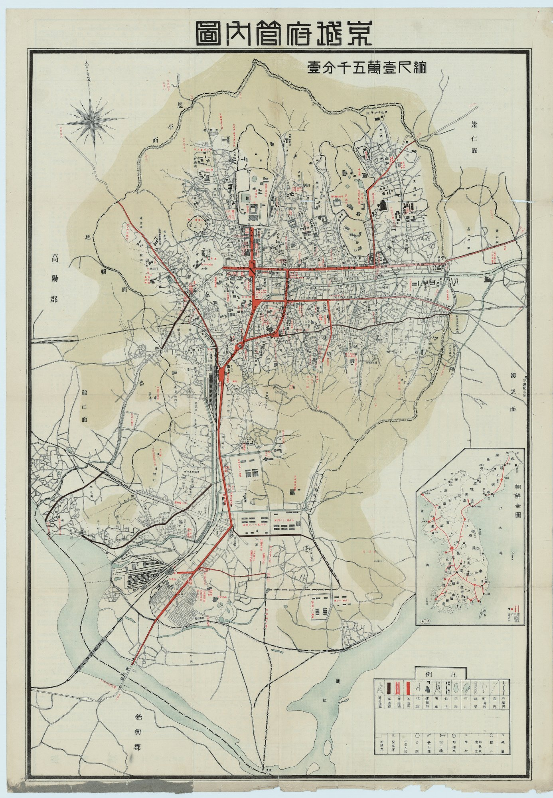

京 城 野 錄 · 事 件 記 錄
사건 긔록경성 사건 지도
1927년 「경성부관내도」 위에 경성야록이 다룬 사건을 점으로 찍엇소. 점을 누르면 그때의 자리와 지금(2026)의 자리를 나란히 보여 드리오. 경성 밖에서 일어난 일은 지도 오른쪽 아래 「조선 전도」 위에 찍혀 잇소.

조선 전도 · 경성 밖의 사건
본편단신 · 정긔 독자
出處
지도 출처 · 「경성부관내도(京城府管內圖)」 1927년 · 서울역사아카이브 소장 (자료번호 H-TRNS-67478-785)지도는 원본 그대로 쓰고, 사건 점만 경성야록이 더하엿소.점의 자리는 지도 위 지명을 보고 짚은 것이라 몇 걸음 어긋날 수 잇소. 「지금」 자리는 오늘의 행정 지명에 맞춰 적은 것이오.